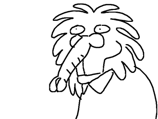
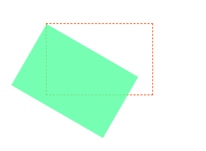

一、过渡[CSS3]————transition
过渡[transition]是CSS3中具有颠覆性的特征之一，我们可以在不使用FlashJavascript的情况下，当元素从一种样式变换为另一种样式时为元素添加效果。
帧动画：通过一帧一帧的画面按照固定顺序和速度播放。

在CSS3里使用transition可以实现补间动画[过渡效果]，并且
当前元素只要有“属性发生变化时即存在两种状态(我们使用A和B代指)，就可以实现平滑的过渡。
transition：要过渡的属性 花费时间 运动曲线 何时开始； [若存在多组属性变化，用逗号隔开即可]
| 属性 | 描述 |
|---|---|
| transition | 简写属性，用于在一个属性中设置四个过渡属性 |
| transition-property | 规定应用过渡的CSS属性名称 |
| transition-duration | 定义过渡效果花费的时间，默认为0 |
| transition-timing-function | 规定过渡效果的时间曲线，默认是ease |
| transition-delay | 规定过渡效果何时开始，默认是0 |
transition-timing-function过渡曲线示意图
二、2D变形[CSS3]————transform
transform是CSS3中具有颠覆性的特征之一，可以实现元素的位移、旋转、倾斜、缩放，甚至支持矩阵方式，配合过渡和动画的知识，可以取代大量以前只能靠Flash才可实现的效果。
- 移动————translate(x,y)
————让盒子水平居中
xxxxxxxxxx .container{ height: 300px; width: 300px; border: 1px dashed orangered; position: relative; /*子绝父相*/ } .content{ position: absolute; height: 100px; width: 100px; background-color: deepskyblue; top: 50%; /*以父级盒子为准移动*/ left: 50%; transform: translate(-50%, -50%) /*以自己为准，移动自己的一半*/ }- 缩放————scale(x,y)
- 旋转————rotate(deg) [单位：deg为度数]
正值为顺时针旋转、负值为逆时针旋转
- 元素转换的原点————transform-origin

xxxxxxxxxxtransform-origin: left top; /*可使用方位名词，也可使用精确定位*/transform-origin: 10px 50px;
- 倾斜————skew(deg,deg)
- 综合案例————旋转的图片
xxxxxxxxxx <style> .container{ height: 150px; width: 200px; margin: 280px auto; border: 1px dashed gainsboro; position: relative; } img{ height: 150px; width: 200px; position: absolute; top: 0; left: 0; transition: all .8s; /*transform-origin: 0 0; 设置“左上”为变换原点 */ transform-origin: top right; } .container:hover img:nth-child(1){ transform: rotate(60deg); } .container:hover img:nth-child(2){ transform: rotate(120deg); } .container:hover img:nth-child(3){ transform: rotate(180deg); } .container:hover img:nth-child(4){ transform: rotate(240deg); } .container:hover img:nth-child(5){ transform: rotate(300deg); } .container:hover img:nth-child(6){ transform: rotate(360deg); } </style>
三、3D变形[CSS3]————transform
[注意]
CSS3中的3D坐标系如下：
[通俗记忆]：以屏幕为平面，横轴为 X 轴，右边为正方向；纵轴为 Y 轴，下为正方形；垂直于屏幕为 Z 轴，屏幕向自己面部的方向为正方形。
- rotateX()————沿着X轴立体旋转
- rotateY()————沿着Y轴立体旋转
rotateZ
rotateX | rotateY
rotateX | rotateY | rotateZ
xxxxxxxxxx<style>.container{height: 150px;width: 200px;margin: 280px auto;border: 1px dashed gainsboro;position: relative;perspective: 900px;perspective: 900px;}img{height: 150px;width: 200px;position: absolute;top: 0;left: 0;transition: all 3s;/*transform-origin: 0 0; 设置“左上”为变换原点 */transform-origin: top left;opacity: .9; /*设置元素透明度*/transform-style:preserve-3d;}.container:hover img:nth-child(1){transform: rotateY(60deg) rotateX(60deg) rotateZ(60deg);}.container:hover img:nth-child(2){transform: rotateY(120deg) rotateX(120deg) rotateZ(120deg);}.container:hover img:nth-child(3){transform: rotateY(180deg) rotateX(180deg) rotateZ(180deg);}.container:hover img:nth-child(4){transform: rotateY(240deg) rotateX(240deg) rotateZ(240deg);}.container:hover img:nth-child(5){transform: rotateY(300deg) rotateX(300deg) rotateZ(300deg);}.container:hover img:nth-child(6){transform: rotateY(360deg) rotateX(360deg) rotateZ(360deg);}</style>
- 透视[perspective]
电脑显示屏是一个2D平面，图像之所以具有立体感[3D效果]，其实只是一种视觉呈现，通过透视可以实现此目的。
透视可以将一个2D平面，在转换的过程中，呈现3D效果。
1.透视原理：近大远小
2.浏览器透视，把近大远小的所有图像，透视在屏幕上
3.perspective，视距：表示视点距离屏幕的长短；视点，用于模拟透视效果时人眼的位置
[注意] perspective作为一个属性，设置给父元素,作用于所有3D旋转的子元素
- translateZ
translateZ的直观表现形式就是大小变化，实质是XY平面相对于视点的远近变化[参照物为perspective的属性]。比如设置了perspective为2200px；那么translateZ的值越接近200px，即高度越近，看上去越大；超过200px就看不到了，因为相当于跑到了后脑勺去了，正常情况下是看不到的。
- translate3D
xxxxxxxxxxtransform: translateX(80px) translateY(80px) translateZ(80px);/*transform: translate3d(80px, 80px, 80px);*/- backface-visibility————定义当元素不面向屏幕时是否可见
xxxxxxxxxx.container{ height: 300px; width: 300px; margin: 80px auto; border: 1px dashed gainsboro; position: relative;}img{ height: 300px; width: 300px; position: absolute; top: 0; left: 0; transition: all 1s; }.container img:nth-child(1) { z-index: 1; backface-visibility: hidden;}.container:hover img { transform: rotateY(180deg);}反转盒子案例

简介伸缩
xxxxxxxxxx .container{ height: 300px; width: 450px; margin: 80px auto; border: 1px dashed red; position: relative; overflow: hidden; } #son1{ height: 300px; width: 450px; position: absolute; } #son2{ position: absolute; box-sizing: border-box; height: 300px; width: 450px; padding: 5px; background-color: rgba(154, 255, 154, .8); text-align: left; line-height: 150%; text-indent: 2em; left: -450px; z-index: 1; transition: all 1s; transition-timing-function: ease-in; } .container:hover div{ transform: translateX(450px); }
四、动画[CSS3]————animation
动画是CSS3中具有颠覆性的特征之一，可通过设置多个节点来精确控制一个或一组动画，常用来实现复杂的动画效果。
语法格式
animation: 动画名称 动画时间 运动曲线 何时开始 播放次数 是否反向
| 属性 | 描述 |
|---|---|
| @keyframes | 规定动画 |
| animation | 所有动画属性的简写属性，除了animation-play-state属性 |
| animation-name | 规定@keyframes动画的名称 |
| animation-duration | 规定动画完成一个周期所花的时间，[s|ms]，默认为0 |
| animation-timing-function | 规定动画的运动曲线，默认为‘ease’ |
| animation-delay | 规定动画何时开始，默认为0 |
| animation-iteration-count | 规定动画被播放的次数，默认为1 |
| animation-direction | 规定动画是否在下一周期逆向播放，默认为‘normal’ |
xxxxxxxxxx .container{ height: 100px; width: 100px; margin: 80px auto; background-color: palegreen; border: 1px dashed gainsboro; animation: go 1s linear 0s infinite alternate; /*animation：动画名称 动画时间 运动曲线 何时开始 播放次数[infinite为无限次播放] 是否反向[先执行一遍动画，然后再反向执行一遍动画：alternate]*/ } @keyframes go { from{ transform: translateX(0); } to{ transform: translateX(100px); } }body{
perspective: 500px;
}
.container{
height: 100px;
width: 100px;
margin: 80px auto;
background-color: palegreen;
border: 1px dashed gainsboro;
animation: go 1s linear 0s alternate;
animation-iteration-count: infinite;
/*animation：动画名称 动画时间 运动曲线 何时开始 播放次数[infinite为无限次播放] 是否反向[先执行一遍动画，然后再反向执行一遍动画：alternate]*/
}
@keyframes go {
0%{
transform: translate3d(0, 0, 0);
}
25%{
transform: translate3d(30px, 30px, 20px);;
}
50%{
transform: translate3d(30px, 20px, 30px);;
}
75%{
transform: translate3d(20px, 20px, 30px);;
}
100%{
transform: translate3d(0, 0, 0);;
}
}
图片无缝滚动
效果展示
CSS主体
<style>
*{
padding: 0;
margin: 0;
}
ul{
list-style: none;
}
nav{
margin: 10px auto;
width: 720px;
height: 90px;
border: 1px solid palegreen;
overflow: hidden;
}
nav li{
float: left;
}
nav ul{
width: 200%;
animation: moving 5s linear infinite; /*引用动画*/
}
/*定义动画*/
@keyframes moving {
from{
transform: translateX(0);
}
to{
transform: translateX(-720px);
}
}
nav:hover ul{
/*鼠标经过nav时，里面的ul停止动画s*/
/* 设置动画暂停 */
animation-play-state: paused;
}
img{
width: 120px;
height: 90px;
}
HTML主体
<nav>
<ul>
<li><img src="./img/1%20(1).jpg"></li>
<li><img src="./img/1%20(2).jpg"></li>
<li><img src="./img/1%20(3).jpg"></li>
<li><img src="./img/1%20(4).jpg"></li>
<li><img src="./img/1%20(5).jpg"></li>
<li><img src="./img/1%20(6).jpg"></li>
<li><img src="./img/1%20(1).jpg"></li>
<li><img src="./img/1%20(2).jpg"></li>
<li><img src="./img/1%20(3).jpg"></li>
<li><img src="./img/1%20(4).jpg"></li>
<li><img src="./img/1%20(5).jpg"></li>
<li><img src="./img/1%20(6).jpg"></li>
</ul>
</nav>
五、伸缩布局[CSS3]
CSS3在布局方面做了非常大的改进，使得我们对块级元素的布局排列变得十分灵活，适应性非常强，在响应式开发中可以发挥极大的作用。
主轴：flex容器的主轴主要用来配置flex项目，默认是水平方向
侧轴：与主轴垂直的轴成为侧轴，默认是垂直方向的
主轴和侧轴并不是固定不变的，通过flex-direction可互换
- flex————子盒子平均分布
section{
display: flex; /*开启伸缩模型*/
height: 100px;
min-width: 240px;
max-width: 1080px;
background-color: palegreen;
border: 1px solid red;
}
section div{
height: 100px;
flex: 1;
}
section div:nth-child(1){
background-color: deepskyblue;
}
section div:nth-child(2){
background-color: orangered;
}
section div:nth-child(3){
background-color: indianred;
}
section div:nth-child(4){
background-color: aqua;
}
section div:nth-child(5){
background-color: fuchsia;
}
flex-direction: row; /*culumn：纵向[垂直]排列 row:横向[水平]排列*/
- justify-content————调整主轴对齐位置
| 值 | 描述 |
|---|---|
| flex-start | 默认值，项目位于容器的开头。让子元素从父容器的开头排序 |
| flex-end | 项目位于容器的结尾。让子元素从父容器的结尾排序 |
| center | 项目位于容器的中心 |
| space-between | 项目位于各行之间留有空白的容器的内 |
| space-around | 项目位于各行之前、之间、之后均带有空白的容器内 |
flex-start
flex-end
center
space-between
space-around

- align-items：设置侧轴对齐位置
| 值 | 属性 |
|---|---|
| stretch | 默认值，项目被拉伸以适应容器 |
| ...... | 其余参数与justify-content相同 |
- flex-wrap————控制是否换行
| 值 | 描述 |
|---|---|
| nowrap | 默认值，规定灵活的项目不拆行、不换行，收缩显示 |
| wrap | 规定灵活的项目必要时拆行和换行 |
| wrap-reverse | 规定灵活的项目必要时拆行和换行，但是以相反的顺序 |
- align-content堆栈[由flex-wrap产生的独立行]对齐
- flex-flow是flex-direction、flex-wra的简写形式
- order控制子项目的排列顺序，正序方向排序，从小到大